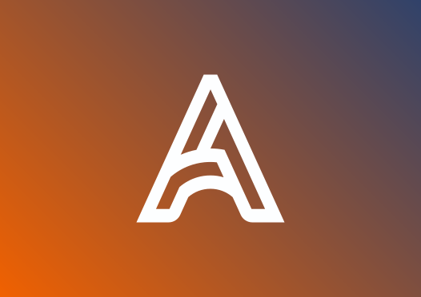

Altana

Qué hice
Creé la marca completa para una empresa que organiza eventos y necesitaba una imagen propia. Diseñé el isologotipo en versiones apaisada y apilada, con variantes en degradado, negro y blanco para distintos fondos. Definí la tipografía (Lato en cuatro pesos) y armé el manual de identidad corporativa con las reglas de uso, además de fotos de perfil para redes.
Resultado
Una identidad flexible, con un sistema de logos listo para usar en redes, papelería y piezas de eventos.
Galería
Imagen pendiente
Imagen pendiente
Imagen pendiente